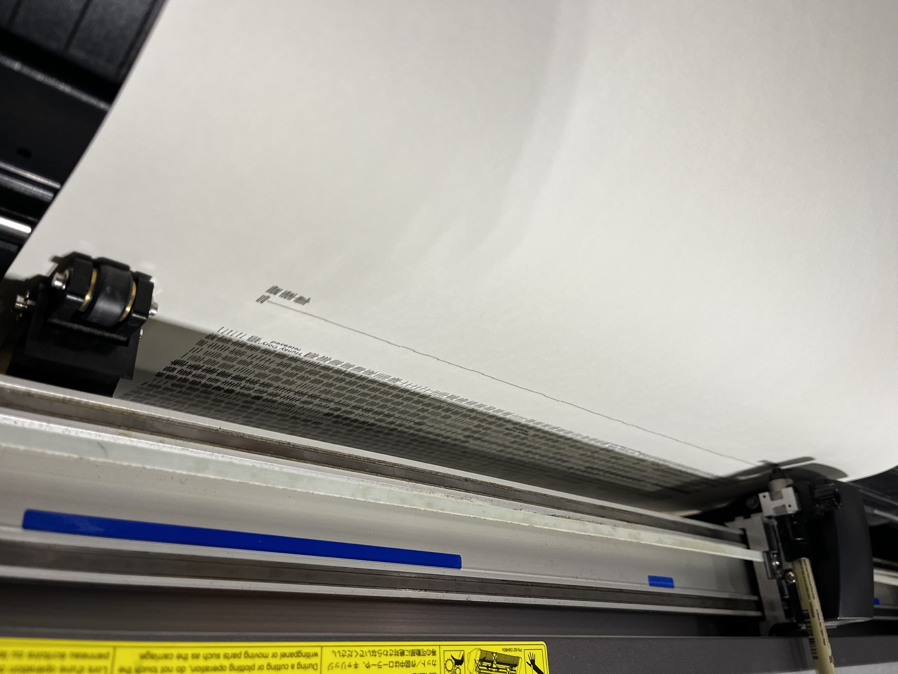

The Story Behind
the
Lines.
How we turn the lives of our favorite icons into physical pieces of art.
More Than Just a Print
A standard print just copies an image, but a pen plot is a physical performance. Watching the pen draw each individual hash mark—capturing distinct moments in an iconic life—feels like watching time itself being recorded onto the page.
The 8-hour duration isn't just a technical requirement — it's a deliberate act of patience and a rhythmic tribute to the artist's legacy.
The Algorithm
We pick these iconic people because we love their work and want to better understand their lives. Each timeline is researched and curated to create a balance of history and time, translating their biographical data into mathematical vectors.
A custom Python script then processes these inputs. We've spent over a year refining this code to ensure it derives a beautiful, flowing visual path for the plotter to follow.
# Hash Generation Logic def generate_path(seed, complexity): points = [] for i in range(complexity): x = math.sin(seed * i) * (i * 0.1) y = math.cos(seed * i) * (i * 0.1) points.append((x, y)) return points # Life Event Data Ingestion event_vector = data.ingest('life_events_log.csv') hash_complexity = len(event_vector) * 52 # Build weekly tally groups for week in event_vector: path = generate_path(week.seed, week.duration) canvas.draw(path, pen='0.1mm')
The Layout
The transition from code to canvas requires human intuition. Every design is reviewed and carefully adjusted.
We print dozens of test prints for each piece, tweaking the hash mark spacing, text layout, and even the speed and pressure of the plotter to get it just right before the final plot begins.
The Plot
Every single piece is unique. The human nature of pen on paper, the subtle vibrations of the studio, and the way the ink flows and absorbs into the cotton stock means no two plots are ever exactly the same.
We utilize a Bantam Tools NextDraw™ large format plotter for its mechanical precision, but it's the physical friction that gives the piece its soul. A single piece requires over 8 hours of plotting.


The Materials
Permanence is our priority. We utilize 300gsm acid-free cotton rag paper, chosen for its structural integrity and tactile grain.
Our drawings are rendered with lightfast carbon-based pigment ink (ISO 12757-2). This combination ensures the record remains as vivid a century from now as the day it was plotted.
Process Documentation Complete
View Resulting Records